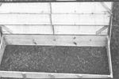

4. The cover panel of the cold frame can be held open (for ventilation or plant tending) with two pivoting support boards as shown. Each of these is drilled at set intervals, and a pair of matching holes (one in each end) are bored in the cover's framework. The lid can then be secured in a number of positions by inserting nails through the support boards and the cover holes.